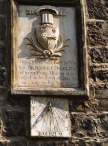
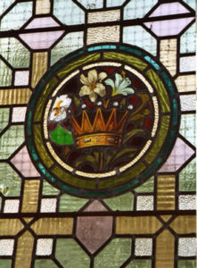

History
Tayport Auld Kirk History
The Kirk has stood on this site in one form or another from around 1607 which makes parts of the structure almost 400 years old. It is one of the oldest buildings in Tayport and is a landmark with its distinctive leaning clock tower. The Church and Graveyard are listed by Historic Scotland as being of significant historic interest.
The best approach to the building is in fact from the west, the Whitenhill gate, which was the original access from the small hamlet based on Whitenhill, Butterwynd, Rose Street, School Wynd and Greenside Place, which together formed one of three small groupings of buildings on the original shoreline of Ferry Port on Craig . At the gate,on the right hand side, is the old Mortuary Building , now ruinous, the path approaching the significant mass of the Tower, passes by several distinctive Yew trees, themselves very old, possibly 250 to 300 years and planted for religious significance, but now also create an atmospheric setting for the church.
The Tower and Main Building date from 1794 and are of a very robust and simple style. Entering the Main Door on the South West side of the tower is a porch area which is the footprint of the Tower and the likely extent of the Vault below. This is the last resting place of the various ‘Lairds of Scotscraig’. The Vault has not been opened as far as we are aware in living memory, but will need to be opened at some stage for structural surveying, and at that time the various remains will be recorded. The small stair to the left was the private access to the Laird’s Loft or private room which was used by the Laird and his family for retiring or refreshment, the services in the main church being viewed from a ‘box’ or balcony, now of course removed. Above the Laird’s Loft are three stages of ladders to access the Clock Room and Bell. These cannot be made accessible to visitors at this stage.
Moving into the main volume of the church we see an arrangement first recorded in 1881 on drawings, but not implemented until much later. The original arrangement from about: 1800 is unrecorded, but would have been very simple with a pulpit and choir box possibly at one end and a timber gallery with wooden stairs at the other and significantly, very small windows. The arrangement we now see was obviously a topic of great debate, since further drawings dating up to 1894 show similar proposals, attempting to increase the seating capacity to 900, much to the satisfaction no doubt of the Rev. Christopher Halliday at the time. We may gain a better insight into the various arrangements of the interior as work progresses and will record the details as they are revealed. The final arrangement proposed with the stone internal stairs to the balcony or gallery area seems to have made the best use of the space available.
By 1898 drawings show proposals for the massive alteration to create the bay to house the Organ, and the two large stained glass windows which flank it. The Organ was built and installed in 1899, by The Dundee Organ Manufacturer at 7 Sea Wynd . The proprietor was a Mr John Miller and it is assumed that he designed the Organ. The console was located centrally, but later moved to the side to create more space in the formal area for worship. We have recorded music played at functions in the Building over the past few years and these display how well the Organ works at 105 years of age!
The extent of the alterations to facilitate the Organ installation was truly awe-inspiring, with a huge beam inserted to bridle the opening required and cutting of existing timber trusses in the roof space.
The stained glass windows to either side are currently partly in storage pending restoration at considerable cost, but funding sources for this are in research stage at the moment, and look promising . The very ornate Pulpit and organ front can be seen from all parts of the interior and are truly the focal point of the Church.
We have records of the Graveyard and a catalogue of the most interesting Headstones within it and will be involving the Carved Stones Advisor from Historic Scotland and Fife Council to organize consolidation and safety provision of the Graveyard for the future given the requirement more regular public access.

Cynicus 1854 to 1932
Martin Anderson, buried in an unmarked grave in the Kirk yard.
Martin Anderson (later known as Cynicus), was born in Leuchars Fife in 1854. His parents, William and Margaret (nee Martin) Anderson, married in their home town of Tayport, after which they moved to Kingskettle in Fife where William took up the position of stationmaster, later being promoted to a new post at Leuchars junction.
As a Victorian artist, Cynicus created cartoons and those postcard designs for which he is most famous for. His two claims to fame are that he was foremost an outsider who took London by storm in the early 1880s with his satirical cartoons and later, in Tayport, as a successful designer of the very first humourous postcards. It was in Tayport, in 1902, that he started his own publishing company; the postcard craze had taken off (in 1902 alone, it was estimated that 420 million cards were posted in Britain).
Cynicus Publishing Company
(Presently the premises of ‘Wings & Things’ – previously McGills Furnishings).
Cynicus’ company became one of the major employers in the town which, in turn, allowed him to purchase land in Balmullo. On this land he set about constructing a grand mansion house and landscaping beautiful grounds which he opened to the local public for their walks and picnics. The house became his haven for art and pieces of arcaeological interest that he brought in from all over the world; so adorned was it that the locals affectionately called it ‘Cynicus Castle’.
1908 saw the beginning of the Depression years which engulfed the country and inevitably began to affect Martin’s company and, ultimately, the people of Tayport. Postcards were classed as luxuries that were not needed so the decline in business continued until, in 1911, it faced financial ruin.
Cynicus and his sister, Annie, survived their final years at Castle Cynicus in abject poverty. Sadly, his company never fully regained its former prestige. So when, in the Spring of 1932, Cynicus died with no funds to pay for his funeral he was laid to rest in Tayport Old Church Yard where, to this day, his tomb lies unmarked.
After suffering from many years of neglect and ultimately vandalism his beloved Castle Cynicus eventually fell into disrepair and was finally demolished in 1939. A small part of Tayport’s history vanished forever. Cynicus unmarked grave is in the Kirk Yard.

releated links/resources:
http://www.madrascollegearchive.org.uk/Pupils/biographies/former/fps/martinanderson.htm
http://www.bbc.co.uk/arts/yourpaintings/artists/martin-cynicus-anderson-26722
Book: “Fortunes of Cynicus: Victorian Cartoonist and Postcard Designer” by E. Reid, Flora Davidson (Forest Lodge, 1995).